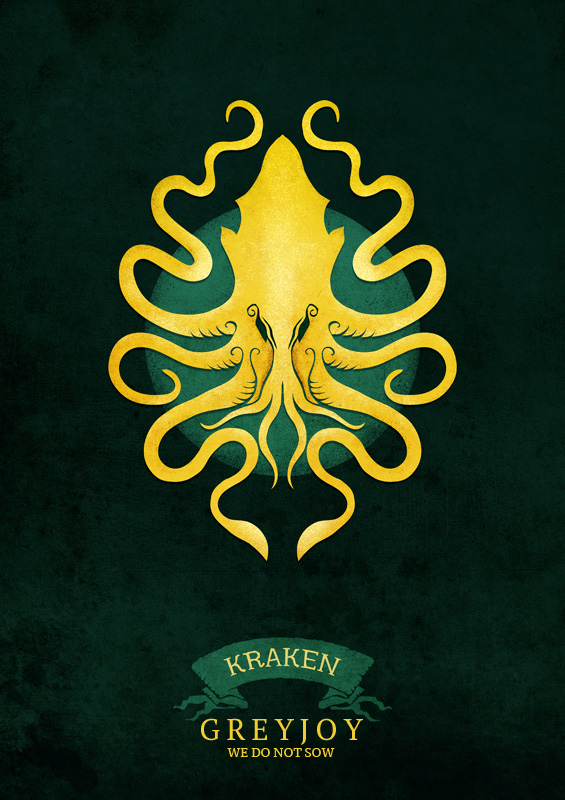

House Greyjoy
House Greyjoy of Pyke is one of the Great Houses of Westeros. It rules over the Iron Islands, a harsh and bleak collection of forbidding islands off the west coast of Westeros, from the Seastone Chair in the castle of Pyke on the island of the same name. The head of the family is traditionally known as the Lord Reaper of Pyke.
The Greyjoys of Pyke claim descent from the Grey King of the Age of Heroes. Legend says the Grey King ruled not only the western isles but the sea itself, and took a mermaid to wife.
In the era when the ironborn chose their rulers through the kingsmoot, only Houses Greyiron and Goodbrother produced more kings than the Greyjoys. For instance, the Old Kraken, Loron Greyjoy, was chosen as a King of the Iron Islands in a kingsmoot. The iron lords, including the Greyjoys, intermarried with the victorious Andals when they invaded the Iron Isles.
Come the Wars of Conquest, King Harren the Black of House Hoare ruled all the lands between the mountains, from the Neck to the Blackwater Rush. When Harren and his sons perished in the burning of Harrenhal, Aegon Targaryen granted the riverlands to Edmyn Tully of House Tully. The surviving lords of the Iron Islands fell into chaotic squabbling, leading Aegon to invade the islands to subdue them. After they bent the knee Aegon allowed them to revive their ancient custom and chose who should have the primacy among them. They chose Lord Vickon Greyjoy of Pyke.

The Grayjoy sigil is a golden kraken on a black field.The Greyjoy's words are "We do not Sow".
The Greyjoys have kept themselves distant from the other Great Houses, rarely taking part in events on the mainland (which they call the "green lands"), even when asked.
Euron Greyjoy